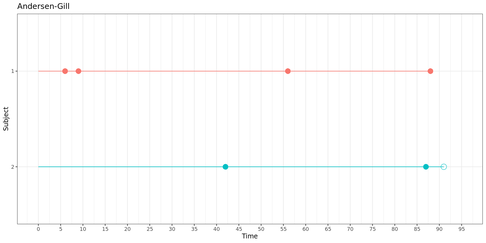
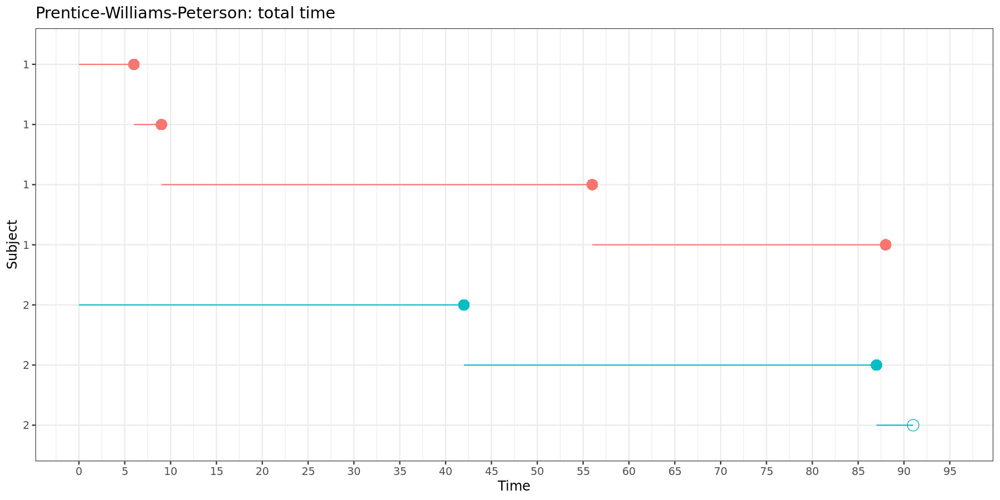

SAS Recurrent Events
Recurrent event models
Modelling recurrent events
Methodology introduction
Traditionally, survival analysis focuses on the time to a single first event. While there are many applications for such time-to-event analysis in clinical trials, this approach falls short when events of interest can occur multiple times within the same subject. Recurrent event models extend the traditional Cox proportional hazards framework to account for multiple events per subject (Ozga et al. 2018, Amorim et al. 2015).
In this tutorial, we will demonstrate how to implement different recurrent event models in SAS, specifically the Andersen-Gill, proportional means/rates (Lin-Wei-Yang-Ying,) Prentice-Williams-Peterson, and Wei-Lin-Weissfeld models. The SAS code follows the layout of Amor 2023, with additional insights taken from Lu et al. 2018.
Recurrent event models can roughly be divided in three categories: counting process models, conditional models and marginal models. In the section below, we will explore the difference between each of these approaches. In addition, important aspects of data structure will be discussed by means of two fictional subjects, one with 4 events and 0 censored observations (events at time 6, 9, 56 and 88), and another with 2 events and 1 censored observation (events at time 42, 57, and censored at time 91).
Define the following:
Note
\(\lambda_i(t)\): hazard function for the \(i\)th subject at time \(t\)
\(\lambda_{ij}(t)\): hazard function for the \(j\)th event of the \(i\)th subject at time \(t\)
\(\lambda_0(t)\): common baseline hazard for all events
\(\lambda_{0j}(t)\): event-specific baseline hazard for the \(j\)th event at time \(t\)
\(\beta\): common parameter vector
\(\beta_j\): event-specific parameter vector for the \(j\)th event
\(X_{ij}\): covariate vector for the \(j\)th event of the \(i\)th subject
Counting process models
Andersen-Gill model (Andersen & Gill 1982)
\[ \lambda_i(t) = \lambda_0(t) \exp \left( \beta X_{ij}(t) \right) \ \]
Counting process approach: treats each subject as a multiple events counting process
Common baseline hazard \(\lambda_0(t)\)
Common regression coefficients \(\beta\)
Unrestricted risk set: a subject contributes to the risk set for an event as long as the subject is under observation, i.e. it can be at risk for a subsequent event even though the previous event did not yet occur
Order of events is not important
An essential assumption of the Andersen-Gill model is that of independent events within subjects. This, however, is often not realistic in clinical trial data. For example, let’s say that we are modelling myocardial infarction (MI). If a patient has already experienced one MI, their risk of subsequent events may increase due to underlying cardiovascular damage or presence of other risk factors. Thus, the more events a patient has, the more likely they are to experience future events, indicating dependence rather than independence. To accurately model this within-subject correlation, extensions like time-varying covariates, a robust sandwich covariance estimator or frailty terms may be needed. In this tutorial, we will discuss the sandwich correction.
Lin-Wei-Yang-Ying (LWYY) model or proportional means/rates model (Lei, Wei, Yang & Ying 2000)
Lin, Wei, Yang & Ying introduced an improved version of the Andersen-Gill model in 2000 (often referred to as proportional means/rates model), featuring a robust sandwich estimator that explicitly accounts for individual subject clusters. These robust standard errors yield wider confidence intervals and provide asymptotically valid inference even when the independence assumption does not hold (Lee et al. 2025). The original and improved Andersen-Gill model often appear interchangeable in the literature, and while they produce identical estimates, their robust standard errors can differ substantially, which may impact the conclusions drawn from statistical inference.
For both versions of the Andersen-Gill model, the data must be structured as follows:
| Subject | Time interval | Event | Stratum |
|---|---|---|---|
| 1 | (0, 6] | 1 | 1 |
| 1 | (6, 9] | 1 | 1 |
| 1 | (9, 56] | 1 | 1 |
| 1 | (56, 88] | 1 | 1 |
| 2 | (0, 42] | 1 | 1 |
| 2 | (42, 87] | 1 | 1 |
| 2 | (87, 91] | 0 | 1 |
This can be visually represented:
In both versions of the Andersen-Gill model, each new time interval starts where the previous one ends.
Conditional models
Prentice-Williams-Peterson model (Prentice, Williams & Peterson 1981)
Conditional approach: incorporates conditional strata to account for ordering/dependence of events
Stratified baseline hazard \(\lambda_{0j}(t)\)
Stratified regression coefficients \(\beta_j\): can be pooled (\(\beta\)) or kept as event-specific (\(\beta_j\)) in the output
Restricted risk set: contributions to the risk set for a subsequent event are restricted to only consider subjects that already experienced the previous event
Order of events is important
The Prentice-Williams-Peterson model can incorporate both overall and event-specific effects \(\beta_j\) for each covariate. An often made assumption is to set \(\beta_1 = \beta_2 = ... = \beta_k = \beta\) to estimate a common parameter \(\beta\).
Depending on the outcome of interest, Prentice, Williams and Peterson suggested two distinct models:
- Total time model
\[ \lambda_{ij}(t) = \lambda_{0j}(t) \exp \left( \beta_j X_{ij}(t) \right) \ \]
The total time variant of the Prentice-Williams-Peterson model uses the same time intervals as the counting process approach (Andersen-Gill model), which is useful for modelling the full time course (\(t\)) of the recurrent event process, i.e. the hazard of any recurrence.
For the total time model, the data must be structured as follows:
| Subject | Time interval | Event | Stratum |
|---|---|---|---|
| 1 | (0, 6] | 1 | 1 |
| 1 | (6, 9] | 1 | 2 |
| 1 | (9, 56] | 1 | 3 |
| 1 | (56, 88] | 1 | 4 |
| 2 | (0, 42] | 1 | 1 |
| 2 | (42, 87] | 1 | 2 |
| 2 | (87, 91] | 0 | 3 |
This can be visually represented:

Again, in the total time model, each new time intervals starts where the previous one ends.
- Gap time model
\[ \lambda_{ij}(t) = \lambda_{0j}(t - t_{j-1}) \exp \left( \beta_j X_{ij}(t) \right) \ \]
The gap time variant of the Prentice-Williams-Peterson model uses time intervals that start at zero and end at the length of time until the next event, which is useful for modelling the time between each of the recurring events (\(t - t_{j-1}\)), i.e. the hazard of recurrence after the previous event.
For the gap time model, the data must be structured as follows:
| Subject | Time interval | Event | Stratum |
|---|---|---|---|
| 1 | (0, 6] | 1 | 1 |
| 1 | (0, 3] | 1 | 2 |
| 1 | (0, 47] | 1 | 3 |
| 1 | (0, 32] | 1 | 4 |
| 2 | (0, 42] | 1 | 1 |
| 2 | (0, 45] | 1 | 2 |
| 2 | (0, 3] | 0 | 3 |
This can be visually represented:
In the gap time model, each time interval starts at zero and has a length equal to the gap time between two neighboring events.
Marginal models
Wei-Lin-Weissfeld model (Wei, Lin & Weissfeld 1989)
\[ \lambda_{ij}(t) = \lambda_{0j}(t) \exp \left( \beta_j X_{ij}(t) \right) \ \]
- Marginal approach: treats each (recurrent) event as having a separate, marginal process
- Stratified baseline hazard \(\lambda_{0j}(t)\)
- Semi-restricted risk set: all subjects contribute follow-up times to all potential events, i.e. each subject is at risk for all potential events, regardless of how many events that subject actually experiences
- Order of events is not important
Although the Wei-Lin-Weissfeld model has it roots in competing risks analysis, it conveniently lends itself to model recurrent events as well. Like the Andersen-Gill model, the Wei-Lin-Weissfeld model also assumes independence of events, which is often not feasible in practice. In addition, it is assumed there is no specific order among the events or that the events are different types of events, and not necessarily recurrent events.
Like the Prentice-Williams-Peterson models, the Wei-Lin-Weissfeld model can incorporate both overall and event-specific effects \(\beta_j\) for each covariate. An often made assumption is to set \(\beta_1 = \beta_2 = ... = \beta_k = \beta\) to estimate a common parameter \(\beta\). Another approach is to combine event-specific effects \(\beta_j\) to get an estimator of the average treatment effect, as described in Wei, Lin & Weissfeld 1989 (this is not discussed further here).
For Wei-Lin-Weissfeld models, the data must be structured as follows:
| Subject | Time interval | Event | Stratum |
|---|---|---|---|
| 1 | (0, 6] | 1 | 1 |
| 1 | (0, 9] | 1 | 2 |
| 1 | (0, 56] | 1 | 3 |
| 1 | (0, 88] | 1 | 4 |
| 2 | (0, 42] | 1 | 1 |
| 2 | (0, 87] | 1 | 2 |
| 2 | (0, 91] | 0 | 3 |
| 2 | (0, 91] | 0 | 4 |
This can be visually represented:
In the Wei-Lin-Weissfeld model, each time intervals starts at zero and ends at its respective event time.
Overview of all models
In summary, the selection of the model to use would depend on the type of events, the importance of the order of the events and the time intervals to be analyzed. We made an effort to summarize the similarities and differences between the models in the table below.
| AG | PWPtt | PWPgt | WLW | |
|---|---|---|---|---|
| Approach | counting process | conditional | conditional | marginal |
| Baseline hazard | common | stratified | stratified | stratified |
| Regression coefficients | common | stratified possible | stratified possible | stratified possible |
| Risk set | unrestricted | restricted | restricted | semi-restricted |
| Time interval | total time | total time | gap time | total time |
| Order of events | not important | important | important | not important |
| Hazard ratio (HR) | risk of any recurrence | risk of any recurrence | risk of recurrence after previous event | risk of event of any type, not necessarily recurrent event |
Note that, because the ordering of events is not important in the Andersen-Gill and Wei-Lin-Weissfeld model, these models come with the assumption of independence of events. In contrast, the Prentice-Williams-Peterson models overcome the need for this assumption by capturing the dependence structure between recurrent events in conditional strata. Consequently, events are assumed to be conditionally independent in the Prentice-Williams-Peterson models.
A nice visual representation of the stratification and time interval structure of each model is given below. The correct data structure is pivotal when modelling recurrent events and depends on the methodology you want to use, as illustrated in the figure.
Modelling recurrent events using the survival package
Data
For this tutorial we will use the bladder data from the survival R package, which captures recurrences of bladder cancer from a clinical trial for an oncolytic called thiotepa. The bladder data is regularly used by many statisticians to demonstrate methodology for recurrent event modelling. Somewhat confusingly, there are three versions of this data available:
bladder1: original data from the study on all subjects (294 records)bladder2: data in Andersen-Gill format on subset of subjects with nonzero follow-up time (178 records)bladder: data in Wei-Lin-Weissfeld format on subset of subjects with nonzero follow-up time (340 records)
For this tutorial, we will use bladder2 to illustrate Andersen-Gill and Prentice-Williams-Peterson models, and bladder to illustrate the Wei-Lin-Weissfeld model.
The variables included in both datasets are:
id: patient id
rx: treatment group (1 = placebo, 2 = thiotepa)
number: initial number of tumors (8 = 8 or more)
size: size in cm of largest initial tumor
start: start of time interval; this variable is not present in
bladderstop: (recurrent) event or censoring time
event: event indicator (1 = event, 0 = censored)
enum: order of recurrence
Importantly, both datasets collect the data in a counting process structure. This means that there is one record for each subject and time interval, where a time interval is defined as the time to its respective event (event = 1), or the time to follow-up if the event did not occur (event = 0).
Let’s look more closely at the bladder2 and bladder data:
bladder2 <- survival::bladder2
gt(head(bladder2, 6))| id | rx | number | size | start | stop | event | enum |
|---|---|---|---|---|---|---|---|
| 1 | 1 | 1 | 3 | 0 | 1 | 0 | 1 |
| 2 | 1 | 2 | 1 | 0 | 4 | 0 | 1 |
| 3 | 1 | 1 | 1 | 0 | 7 | 0 | 1 |
| 4 | 1 | 5 | 1 | 0 | 10 | 0 | 1 |
| 5 | 1 | 4 | 1 | 0 | 6 | 1 | 1 |
| 5 | 1 | 4 | 1 | 6 | 10 | 0 | 2 |
bladder2 %>%
group_by(enum) %>% summarise(n = n()) %>% gt()| enum | n |
|---|---|
| 1 | 85 |
| 2 | 46 |
| 3 | 27 |
| 4 | 20 |
In bladder2, in the Andersen-Gill format, each subject has a variable amount of records, depending on the amount of events that subject experienced.
bladder <- survival::bladder
gt(head(bladder, 20))| id | rx | number | size | stop | event | enum |
|---|---|---|---|---|---|---|
| 1 | 1 | 1 | 3 | 1 | 0 | 1 |
| 1 | 1 | 1 | 3 | 1 | 0 | 2 |
| 1 | 1 | 1 | 3 | 1 | 0 | 3 |
| 1 | 1 | 1 | 3 | 1 | 0 | 4 |
| 2 | 1 | 2 | 1 | 4 | 0 | 1 |
| 2 | 1 | 2 | 1 | 4 | 0 | 2 |
| 2 | 1 | 2 | 1 | 4 | 0 | 3 |
| 2 | 1 | 2 | 1 | 4 | 0 | 4 |
| 3 | 1 | 1 | 1 | 7 | 0 | 1 |
| 3 | 1 | 1 | 1 | 7 | 0 | 2 |
| 3 | 1 | 1 | 1 | 7 | 0 | 3 |
| 3 | 1 | 1 | 1 | 7 | 0 | 4 |
| 4 | 1 | 5 | 1 | 10 | 0 | 1 |
| 4 | 1 | 5 | 1 | 10 | 0 | 2 |
| 4 | 1 | 5 | 1 | 10 | 0 | 3 |
| 4 | 1 | 5 | 1 | 10 | 0 | 4 |
| 5 | 1 | 4 | 1 | 6 | 1 | 1 |
| 5 | 1 | 4 | 1 | 10 | 0 | 2 |
| 5 | 1 | 4 | 1 | 10 | 0 | 3 |
| 5 | 1 | 4 | 1 | 10 | 0 | 4 |
bladder %>%
group_by(enum) %>% summarise(n = n()) %>% gt()| enum | n |
|---|---|
| 1 | 85 |
| 2 | 85 |
| 3 | 85 |
| 4 | 85 |
In bladder, in the Wei-Lin-Weissfeld format, each subject has four records, regardless of how many events that subject actually experienced. In addition, there is no start variable, as all time intervals start at zero.
Note: The variables id, start and stop were renamed to subjid, tstart and tstop to avoid using SAS key words as variable names.
Analysis
In SAS, any survival analysis based on the Cox proportional hazard model can be conducted using the phreg procedure. Hence, conveniently, when modelling time-to-event data with recurrent events, the same procedure can be used. The caveat here is that an adequate data structure is required, which must be in correspondence with the model you want to use.
In this section of the tutorial, we will explain how the arguments of the phreg procedure and data structure must be defined to fit every type of recurrent event model correctly.
Andersen-Gill model
- Improved Andersen-Gill model (LWYY model or proportional means/rates model)
For the improved version of the Andersen-Gill model you must include:
proc phreg data=bladder2 covs(aggregate)model (tstart, tstop) * event(0) = 'predictors';id subjid;
And the data structure must be:
| Subjid | Time interval | Tstart | Tstop | Event |
|---|---|---|---|---|
| 1 | (0, 1] | 0 | 1 | 0 |
| 2 | (0, 4] | 0 | 4 | 0 |
| 3 | (0, 7] | 0 | 7 | 0 |
| 4 | (0, 10] | 0 | 10 | 0 |
| 5 | (0, 6] | 0 | 6 | 1 |
| 5 | (6, 10] | 6 | 10 | 0 |
We will use the bladder2 data for this.
proc phreg data=bladder2 covs(aggregate);
class rx (ref='1');
model (tstart, tstop) * event(0) = rx size number /rl;
id subjid;
run;By including the covs(aggregate) option and setting id subjid;, SAS will compute a robust sandwich covariance and display robust standard error estimates in the output. Under the hood, the robust standard errors will consider all subjid clusters separately and ultimately sum up the score residuals for each distinct cluster.
- Original Andersen-Gill model
The original Andersen-Gill model of 1989 can be fitted by changing covs(aggregate) to covs in the procedure, while excluding id subjid;.
proc phreg data=bladder2 covs;
class rx (ref='1');
model (tstart, tstop) * event(0) = rx size number /rl;
run;Although the original Andersen-Gill model does not consider separate subjid clusters, it still computes robust standard errors using the sandwich estimator. The resulting robust standard errors differ from those provided for the improved Andersen-Gill model, while the estimated coefficients remain perfectly unchanged.
Prentice-Williams-Peterson model
Total time model
For the Prentice-Williams-Peterson total time model you must include:
proc phreg data=bladder2 covs(aggregate);model (tstart, tstop) * event(0) = 'predictors';id subjid;strata enum;
And the data structure must be:
| Subjid | Time interval | Tstart | Tstop | Event | Enum |
|---|---|---|---|---|---|
| 1 | (0, 1] | 0 | 1 | 0 | 1 |
| 2 | (0, 4] | 0 | 4 | 0 | 1 |
| 3 | (0, 7] | 0 | 7 | 0 | 1 |
| 4 | (0, 10] | 0 | 10 | 0 | 1 |
| 5 | (0, 6] | 0 | 6 | 1 | 1 |
| 5 | (6, 10] | 6 | 10 | 0 | 2 |
We will use the bladder2 data for this.
proc phreg data=bladder2 covs(aggregate);
class rx (ref='1');
model (tstart, tstop) * event(0) = rx size number /rl;
id subjid;
strata enum;
run;The conditional strata of the Prentice-Williams-Peterson model are set by strata enum; in the formula, where enum captures the ordering of recurrent events.
Gap time model
For the Prentice-Williams-Peterson gap time model you must include:
proc phreg data=bladder2 covs(aggregate);model gtime * event(0) = 'predictors';id subjid;strata enum;
And the data structure must be:
| Subjid | Time interval | Tstart | Tstop | Event | Enum |
|---|---|---|---|---|---|
| 1 | (0, 1] | 0 | 1 | 0 | 1 |
| 2 | (0, 4] | 0 | 4 | 0 | 1 |
| 3 | (0, 7] | 0 | 7 | 0 | 1 |
| 4 | (0, 10] | 0 | 10 | 0 | 1 |
| 5 | (0, 6] | 0 | 6 | 1 | 1 |
| 5 | (0, 4] | 0 | 4 | 0 | 2 |
This data structure can be achieved in bladder2 by adding a gtime variable.
data bladder2;
set bladder2;
gtime = tstop - tstart;
run;We artificially set start = 0 for each gap time interval by including gtime instead of (start, stop) in the model statement.
proc phreg data=bladder2 covs(aggregate);
class rx (ref='1');
model gtime * event(0) = rx size number/rl;
id subjid;
strata enum;
run;Wei-Lin-Weissfeld model
For the Wei-Lin-Weissfeld model you must include:
proc phreg data=bladder covs(aggregate);model tstop * event(0) = 'predictors';id subjid;strata enum;
And the data structure must be:
| Subjid | Time interval | Tstart | Tstop | Event | Enum |
|---|---|---|---|---|---|
| 1 | (0, 1] | 0 | 1 | 0 | 1 |
| 1 | (0, 1] | 0 | 1 | 0 | 2 |
| 1 | (0, 1] | 0 | 1 | 0 | 3 |
| 1 | (0, 1] | 0 | 1 | 0 | 4 |
| 2 | (0, 4] | 0 | 4 | 0 | 1 |
| 2 | (0, 4] | 0 | 4 | 0 | 2 |
| 2 | (0, 4] | 0 | 4 | 0 | 3 |
| 2 | (0, 4] | 0 | 4 | 0 | 4 |
| 3 | (0, 7] | 0 | 7 | 0 | 1 |
| 3 | (0, 7] | 0 | 7 | 0 | 2 |
| 3 | (0, 7] | 0 | 7 | 0 | 3 |
| 3 | (0, 7] | 0 | 7 | 0 | 4 |
| 4 | (0, 10] | 0 | 10 | 0 | 1 |
| 4 | (0, 10] | 0 | 10 | 0 | 2 |
| 4 | (0, 10] | 0 | 10 | 0 | 3 |
| 4 | (0, 10] | 0 | 10 | 0 | 4 |
| 5 | (0, 6] | 0 | 6 | 1 | 1 |
| 5 | (0, 10] | 0 | 10 | 0 | 2 |
| 5 | (0, 10] | 0 | 10 | 0 | 3 |
| 5 | (0, 10] | 0 | 10 | 0 | 4 |
We will use the bladder data for this.
proc phreg data=bladder covs(aggregate);
class rx (ref='1');
model tstop * event(0) = rx size number /rl;
id subjid;
strata enum;
run;Importantly, the strata of the Wei-Lin-Weissfeld model as set by strata enum; are substantially different from the conditional strata of the Prentice-Williams-Peterson model. The enum variable is now no longer assumed to be an ordinal variable.
Important notes
Note: The rl option ensures the 95% confidence interval for the hazard ratio is displayed.
Note: If you want to display non-robust, model-based standard errors (like the ones given by default in R), you can do this by adding covm to the procedure statement.
Note: It may be useful to look at the Summary of the Number of Event and Censored Values to check whether the data stratification was rightly specified for your model. Examples for the Prentice-Williams-Peterson and Wei-Lin-Weissfeld models are given below.
Summary for Prentice-Williams-Peterson models:
Summary for Wei-Lin-Weissfeld model:
Note: R uses ties = "efron" by default, while SAS uses ties = breslow by default. If this argument remains unchanged in both software, it can cause differences in outcome. For more information, be sure to check the CAMIS webpage on the comparison of Cox proportional hazards models in R and SAS.
Interpretation
In terms of interpretation, hazard ratios (\(\exp(\beta_j)\)) are often used when making inferences based on Cox proportional hazards models. Now, as you may remember from the overview presented earlier, it is important to recognize that each of the recurrent event models comes with a slightly different interpretation of the hazard ratio, as defined by the assumptions around the model.
| AG | PWPtt | PWPgt | WLW | |
|---|---|---|---|---|
| Hazard ratio (HR) | risk of any recurrence | risk of any recurrence | risk of recurrence after previous event | risk of event of any type, not necessarily recurrent event |
This means that, for the bladder data, we can draw slightly different conclusions on the hazard ratio of the group treated with thiotepa (rx = 2) versus the placebo group (rx = 1).
| Model | HR: rx2 vs rx1 | 95% CI | P-value |
|---|---|---|---|
| AG | 0.631 | 0.381 to 1.047 | 0.0747 |
| Original AG | 0.631 | 0.403 to 0.989 | 0.0447 |
| PWPtt | 0.716 | 0.486 to 1.053 | 0.0898 |
| PWPgt | 0.764 | 0.508 to 1.148 | 0.1952 |
| WLW | 0.560 | 0.309 to 1.015 | 0.0560 |
These conclusions are:
Andersen-Gill: the risk of having any new tumor recurrence in the treatment group is 0.631 (0.381 - 1.047) times that of the placebo group
Prentice-Williams-Peterson: total time: the risk of having any new tumor recurrence in the treatment group is 0.716 (0.486 - 1.053) times that of the placebo group
Prentice-Williams-Peterson: gap time: the risk of having a new tumor recurrence after a previous event in the treatment group is 0.764 (0.508 - 1.148) times that of the placebo group
Wei-Lin-Weissfeld: the risk of having any type of event in the treatment group is 0.560 (0.309 - 1.015) times that of the placebo group
Note: The improved Andersen-Gill model (LWYY model or proportional means/rates model) is preferred over the original Andersen-Gill model.
Event-specific estimates
For the Prentice-Williams-Peterson and Wei-Lin-Weissfeld models we can incorporate both overall (\(\beta\)) and event-specific (\(\beta_j\)) effects for each covariate. To arrive at pooled model parameters these models assume that \(\beta_1 = \beta_2 = ... = \beta_k = \beta\). Until now, we have only considered pooled model parameters, but given the underlying stratification of these two models in particular, it may be valuable to look into the event-specific estimates as well (Amorim & Cai 2015).
To get event-specific estimates for the treatment effect (rx), we first need to introduce four new rx variables to the bladder2 and bladder datasets, one for each stratum.
data bladder2;
set bladder2;
rx_enum1 = rx*(enum=1);
rx_enum2 = rx*(enum=2);
rx_enum3 = rx*(enum=3);
rx_enum4 = rx*(enum=4);
run;data bladder;
set bladder;
rx_enum1 = rx*(enum=1);
rx_enum2 = rx*(enum=2);
rx_enum3 = rx*(enum=3);
rx_enum4 = rx*(enum=4);
run;With these four interaction variables, we need to specify rx_enum1-rx_enum4 in the formula and set class enum / param=glm; to output the event-specific estimates.
Prentice-Williams-Peterson model
Total time model
proc phreg data=bladder2 covs(aggregate);
class enum / param=glm;
model (tstart, tstop) * event(0) = rx_enum1-rx_enum4 size number /rl;
id subjid;
strata enum;
run;
Gap time model
proc phreg data=bladder2 covs(aggregate);
class enum / param=glm;
model gtime * event(0) = rx_enum1-rx_enum4 size number/rl;
id subjid;
strata enum;
run;Wei-Lin-Weissfeld model
proc phreg data=bladder covs(aggregate);
class enum / param=glm;
model tstop * event(0) = rx_enum1-rx_enum4 size number /rl;
id subjid;
strata enum;
run;References
Amor 2023. Eat, Sleep, R, Repeat.
Amorim & Cai 2015. Modelling recurrent events: a tutorial for analysis in epidemiology. International Journal of Epidemiology. 2015 Feb;44(1):324-33.
Andersen & Gill 1982. Cox’s Regression Model for Counting Processes: A Large Sample Study. The Annals of Statistics. 10(4):1100–1120.
Lu & Shen 2018. Application of Survival Analysis in Multiple Events Using SAS. PharmaSUG 2018.
Ozga et al. 2018. A systematic comparison of recurrent event models for application to composite endpoints. BMC Medical Research Methodoly. 2018 Jan 4;18(1):2.
Prentice, Williams & Peterson 1981. On the Regression Analysis of Multivariate Failure Time Data. Biometrika. 68(2):373–379.
Wei, Lin & Weissfeld 1989. Regression Analysis of Multivariate Incomplete Failure Time Data by Modeling Marginal Distributions. Journal of the American Statistical Association. 84(408):1065–1073.